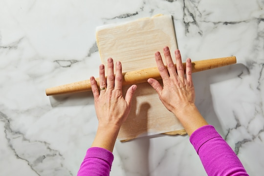
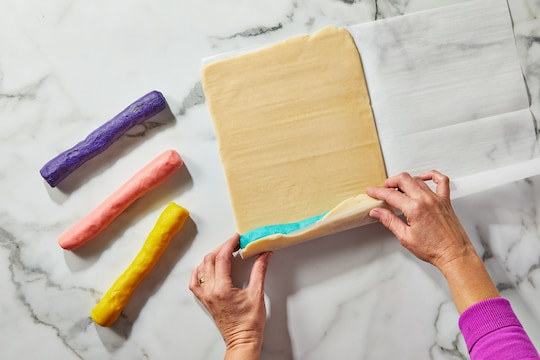
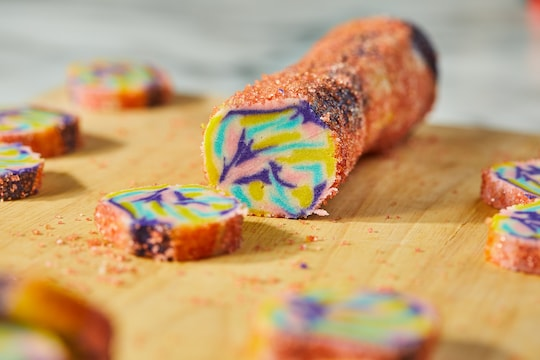

Using paddle attachment, combine A. Mix on medium until everything is well-combined and creamy but not aerated, 1 to 2 minutes. Add B and continue mixing on medium until thoroughly combined, 3 to 4 minutes.
Add C and mix on low, scraping down the sides and bottom of the bowl occasionally. Mix until no dry pockets remain, 2 to 3 minutes. As you mix, make sure you don’t see any areas of unincorporated butter. The dough will be soft and slightly sticky.
Lay a 13-by-18-inch (33-by-45-centimeter) piece of parchment paper on your countertop, with one of the long sides facing you.
Remove about 1 1/3 cups (300 grams, or a little less than half) of the dough from the bowl and place it onthe parchment paper. Fold the parchment paper in half like a book. Press the dough down gently to flatten it a little. Roll the dough out between the parchment sheets until it is spread edge-to-edge. If any dough squishes out of the sides, scoop it up, peel the parchment paper up a little bit and stick the dough back in. Set the dough within the parchment paper aside, leaving it at room temperature. ** might work better chilled a bit**
Divide the remaining dough into 4 portions. Color each portion individually as follows:
If using gel color, place one dough portion in a small bowl. Add a drop of gel food coloring and stir well to blend the color into the dough. Keep adding color until you’re satisfied. Roll into a log 9" long, then do the other three portions.
Place each log on the rolled out plain dough, and using the parchment roll it up like a hotdog and snip it off. Doesn't matter if the last log is not completely covered.
Place two of the dough logs next to each other and place the other two on top of them, so you have a two-by-two formation. Squeeze the logs together gently to seal the dough logs together. Working on a clean sheet of parchment, if desired, roll the dough log back and forth to make it longer and thinner. Keep rolling until the log is approximately 14 inches (36 centimeters) long.
Cut the dough log in half. Take the two halves and stack them on top of each other. Squeeze them together gently. Repeat the rolling, cutting and stacking steps two to three more times. Three rolls will give you larger splotches of color, like stained glass. Four rolls will give you smaller splotches of color, like a kaleidoscope.
Roll the final log out to a length of approximately 14 inches. Wrap the dough log in parchment paper. If the dough is too soft to hold the shape you want, chill it for 15 to 20 minutes until it's firmer but still malleable before proceeding with shaping. Refrigerate the shaped log for at least 4 hours and up to 24 hours.
Remove the chilled dough from the refrigerator. Place your exterior decoration (sprinkles, turbinado sugar, sesame seeds or any other small particulate) in a separate rimmed baking sheet or baking dish that will accommodate it. Lightly brush the exterior of the dough log with water. Roll the dough around in your decoration, pressing gently to adhere.
Cut the log into approximately 1/4-inch (2/3-centimeter) thick slices. Place the cookies on lined baking sheets, leaving at least 1/2 inch of space between the cookies. They will spread a little but not much. Bake 15 minutes at 350°. Allow to cool completely on the sheets.
